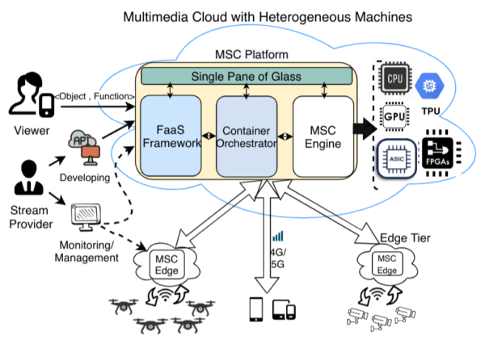

MSC: Developing a Flexible Serverless Multimedia Streaming Cloud Platform
NSF CAREER Project at University of Louisiana Lafayette
Multimedia Cloud Overview
As multimedia streaming is becoming an integral part of many applications, there is a desire to build a special-purpose platform that enables rapid development of streaming services and accommodates them in a robust and cost-efficient manner across the edge-to-cloud continuum. Accordingly, the goal of this project is to design the Multimedia Streaming Cloud (MSC) platform with high-level management abstractions that can reap the benefits of the continuum while hiding the complexity of working with it. MSC promotes the Function-as-a-Service computing paradigm and offers the Object-as-a-Service (OaaS) abstraction as a first-class citizen to represent various streaming sources, hence, relieving the users and developers from both the resource and data management difficulties. OaaS enables flexible migration of the objects across the continuum and accelerates the development of streaming services too. Preserving the object’s state facilitates seamless object migration, hence, elasticity and mobility of objects across the edge-to-cloud continuum are achieved. MSC offers cost-efficient and robust QoS to each streaming object via smart task management and resource allocation methods operating on heterogeneous cloud resources. An open-source prototype of the MSC platform is developed and tested via recording devices, a local edge computing system, and a public cloud to assess its usability and robustness..

Bird-eye view of the MSC Cloud platform. MSC operates based on the Serverless principles. It can handle user-defined functions in its service repository and apply them on the multimedia contents upon demand.
This project is sponsored by the National Science Foundation (NSF) as a CAREER Award, under the Computer Networked Systems (CNS) Directorate.
Why do we need the MSC Platform?
The MSC platform democratizes multimedia streaming and lays the foundation for the next generation applications operating based on multimedia streaming. MSC will pave the way for stream providers to become solution-oriented and let them focus on developing advanced streaming services and integrate them to their applications. The project results will impact not only the forefront of scientific discovery, but also benefit the society by offering flexible and robust streaming services across various applications. The object abstraction and the intelligent resource allocation methods of the MSC platform can be adapted to and employed in other soft real-time computing systems. The project will impact computer science and IT education by integrating applications into the distributed computing curriculum.